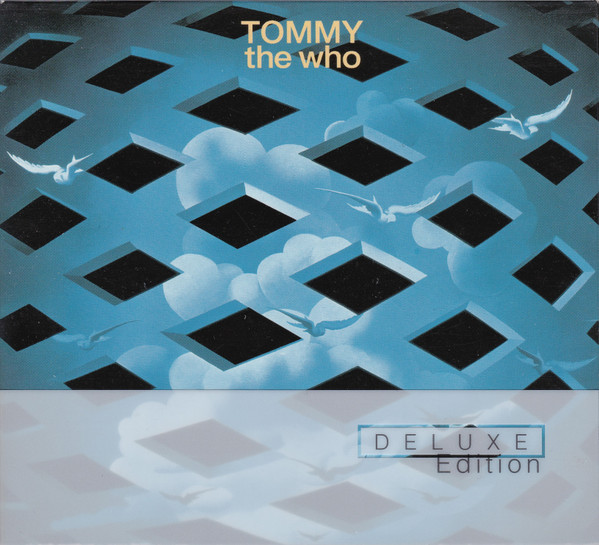

SACD
Tommy
The Who
Media: NM · Sleeve: NM
CA$65.00
Discogs SuggestedCA$111.62
Discogs MedianCA$111.62
Discogs HighCA$111.62
- Physical Copy ID
- BB-SACD-216
- Year
- 2003
- Label
- Polydor
- Catalog #
- 9861011
- Country
- Europe
- Genre / Style
- Rock · Classic Rock